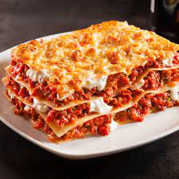

Lasagna Recipe

Description
Everyone loves a good lasagna, right? It's a great way to feed a crowd and a perfect dish to bring to a potluck. It freezes well. It reheats well. Leftovers will keep you happy for days.
Simply Recipes reader Alton Hoover sent me his favorite recipe for lasagna which he has been cooking since his college days. Alton's original recipe created enough lasagna for a small army so I halved it. What is posted here will easily serve eight people.
Ingredients
- Chicken – Chicken for a juicier lasagna.
- Onion – we use yellow onion, or sweet onion works well
- Garlic cloves – you can add more if you love garlic
- Red wine – This amps up the flavor of your sauce (avoid using cooking wine).
- Marinara sauce – Use homemade marinara or store-bought.
- Dried thyme – Italian seasoning, basil, or oregano can be substituted
- Sugar – balances the acidity of the tomatoes
- Parsley – flat-leaf or curly parsley works well
- Lasagna noodles – Cook these al dente; they’ll continue to soften as the lasagna bakes.
- Cottage cheese – adds great texture and moisture
- Ricotta cheese – we use low-fat or part-skim ricotta
- Mozzarella cheese – An Italian cheese blend works, but mozzarella is definitely the classic choice
- Egg – helps hold the cheese layer together
Steps
- Brown the chicken – Add oil to a deep pan and sautee
onion and beef until browned, 5 minutes then add garlic and stir another minute.
- Assemble – Spread 1/2 cup of the meat sauce on the bottom of a 9×13-inch casserole dish.
Add 3 noodles, followed by 1/3 of the meat sauce, 1 cup of mozzarella, and half of the
ricotta mixture. Repeat, then for the top layer, add 3 noodles, 1/3 of the meat sauce,
and the remaining mozzarella.